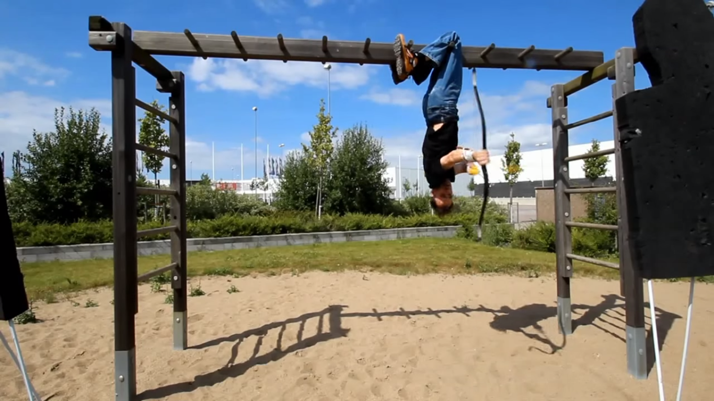

Top Dawgs
Velkommen til Top Dawgs hjemmeside! "Jeg har lyst på en webside som viser frem det fremste av menneskelige prestasjoner..." -Dette er et lite utdrag fra motivasjonsteksten til Stian. Der han forklarer hvorfor han ønsket å få laget denne nettsiden.
Hovedinnholdet i til denne nettsiden er for det meste videoer. Dette finner du under Top Dawgs fanen i menyen. Hvis du har lyst til å hoppe rett inn i Top Dawgs universert er det bare å Klikke her for å komme til den første Top Dawg videoen.
Hvis du ønsker, kan du besøke fotogalleriet vårt. Her finner du spennende bilder med høydepunkter fra alle Top Dawgs videoene våre. Hvis du ønsker en liten teaser på hva du har i vente, kan du klikke her for å besøke fotogalleriet.
Dersom du ønsker å ta kontakt. Enten det er kritikk eller ros. Eller kanskje du har et forslag til hvem som burde bli den neste Top Dawgen? Gå til kontaktsiden vår får å finne kontaktinformasjon, så kan kanskje du påvirke Top Dawgs sin framtid.

Vi håper du lar deg underholde av siden vår og videoene våre. I tillegg til innholdet som er beskrevet på denne siden, så har vi en og annen hemmelig knapp. Klarer du å finne de?